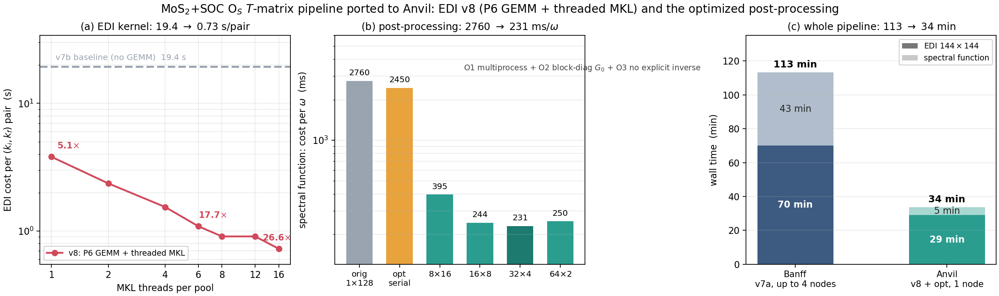
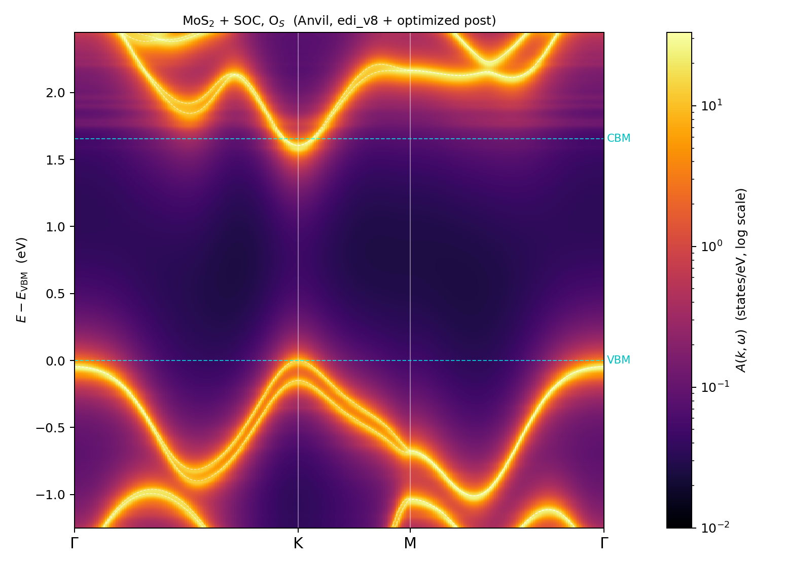

1 · Why, and the constraints that shaped it
The motivation was mundane: Banff queue latency. The interesting part is that Anvil does not simply accept the Banff job layout, and the constraints it imposes turned out to be the thing that forced — and then rewarded — the optimization work.
Anvil's highmem partition carries a QOS of cpu=128, node=1: every job is capped at one node, and at most two run concurrently. There is a wide-highmem QOS (16 nodes) but the allocation is not authorized for it. So the Banff production layout — 4 nodes $\times$ 36 ranks, -nk 144, one $k_i$ per pool — is simply not expressible. A multi-node pending job cannot even be repartitioned into highmem; scontrol update is refused by the QOS.
The redesign: 48 pools of 3 $k_i$ each on one node, --cpus-per-task=2. Total work is unchanged (20 736 pairs); what changes is that throughput is now set by 128 cores rather than by 144 single-threaded ranks spread over four nodes. That only becomes a win if the per-pair kernel is fast and can use more than one core — which is exactly what v8 provides.
Ironically, the one-node cap costs less memory headroom than it sounds: a single highmem node has 1031 GB, more than two wholenode nodes combined (2×257 GB). The binding resource on Anvil is cores, not memory. Measured EDI footprint at 48 pools: 12.6 GB/rank, 605 GB of 1031 — matching the a priori estimate $n_r\!\cdot\!n_{\rm pol}\!\cdot\!n_{\rm tot}\!\cdot\!n_{k,\rm local}\!\cdot\!16$ B to the gigabyte.
2 · Rebuilding QE 7.5 + EDI with ifx + MKL
The pre-existing Anvil tree was built with AOCC against netlib BLAS, which measures 7.2 GFLOP/s on a complex GEMM — and led, briefly, to the wrong conclusion that "Anvil GEMM is slow." It is not: Anvil MKL measures 51.6 GFLOP/s single-threaded, statistically identical to Banff's 50.6. The slowness was a property of that particular link, not of the machine. (AMD BLIS is a dead end here for a different reason: -lblis-mt links but computes nothing — the symbol table exports bli_zgemm and no BLAS-compatible zgemm_, so the result is silently zero.)
Four traps, all hit in one rebuild, all now captured in a single intelenv.sh:
| # | symptom | cause & fix |
|---|---|---|
| 1 | link fails on for_alloc_allocatable_handle | module load intel/2024.1 sets PATH but not LIBRARY_PATH. Add the compiler lib directory. |
| 2 | cannot find -lmpifort / -lmpi | Intel MPI splits its libraries across $MPIROOT/lib and $MPIROOT/lib/release. Both are needed. |
| 3 | Cannot open include file 'mpif.h' | QE's configure does not put the MPI include directory into IFLAGS. Patch it. Note also that Anvil ships mpi.mod for gfortran only, so -D__MPI_MODULE is unusable — the build must go through mpif.h. |
| 4 | EDI dies in pw2wan_edi.f90: post_proc_flag not found in w90_io | make pw never triggers the w90lib target, so libwannier.a is never built and a copied tree keeps a stale external/wannier90/make.inc pointing at the old compiler. configure generates the correct install/make_wannier90.inc — it just has to be copied over, then make lib invoked directly (bypassing update_submodule's git step). |
Working configuration: -D__DFTI -D__MPI, MPIF90=mpiifx F90=ifx CC=icx, MKL for BLAS/LAPACK/FFT. QE's fft_scalar.DFTI.f90 does #include "mkl_dfti.f90" straight from $MKLROOT/include, so DFTI needs only an -I and no extra library — which also removes the external FFTW dependency the AOCC build had.
3 · EDI v8: what the two optimizations are actually worth
v8 combines two changes to the direct-mode kernel. P6 reformulates the nonlocal vertex as a matrix product: with the KB channel index flattened as $p=(\kappa,\sigma)$, the per-pair sum
becomes two ZGEMMs per $(k_i,k_f)$ pair, with $D$ block-diagonal per atom and independent of $k$, so $DC$ is built once per $k_f$. P7$'$ adds a second parallel layer inside each pool, leaving the -nk logic untouched.
Measuring these needed care. An earlier attempt on a small case (48 bands, 8 pairs) showed nothing at all — 543 / 525 / 524 s across three variants. The reason: fixed setup is $\approx$195 s and completely swamped a 12 s kernel; the spread was page cache, not signal. Solving 1-pair against 12-pair wall times for $(\,$setup, per-pair$\,)$ separates them cleanly, and two independent estimates of the setup cost (195.6 s from v7b, 193.9 s from v8) agree — so the decomposition can be trusted.
| configuration | setup | per pair | kernel speed-up |
|---|---|---|---|
| v7b, sequential MKL (baseline) | 195.6 s | 19.36 s | 1.00$\times$ |
| v8, sequential MKL — P6 GEMM only | 193.9 s | 4.09 s | 4.73$\times$ |
| v8, 8 threads — P6 + threaded MKL | 86.2 s | 0.82 s | 23.7$\times$ |
The surprise is where the second factor comes from. v8 contains exactly one explicit !$OMP region — the element-wise build of the local-potential GEMM operand. Its measured contribution is zero (243 s $\to$ 243 s at 8 threads). The entire second-level speed-up is MKL threading the two big ZGEMMs that P6 created. Once the hot loop is a GEMM, the right way to add a second parallel layer is to let the BLAS do it, not to hand-write OpenMP.

Thread efficiency falls steeply past 4–6 (100 / 81 / 62 / 58 / 52 / 35 / 33 % at 1 / 2 / 4 / 6 / 8 / 12 / 16), which sets the practical operating point. Extrapolated to a 144-pairs-per-pool production run: v7b 2984 s $\to$ v8 at 6 threads 240 s, 12.4$\times$. Setup itself also threads ($195\to86$ s, 2.3$\times$) since the DFTI transforms and setup BLAS pick up the threads for free.
An immediately actionable corollary for Banff. The Banff edi_v8.x is already built with -qopenmp + mkl_intel_thread + libiomp5, and its job scripts already set OMP_NUM_THREADS=${SLURM_CPUS_PER_TASK}. The only thing capping it is --cpus-per-task=1 in the production script: with --exclusive and the OOM-driven 4 nodes $\times$ 36 ranks layout, 752 of 896 cores sit idle. Changing that one line to 6 (224/36$\,\approx\,$6.2) requires no rebuild and no code change, and threads share the rank's memory so the OOM constraint that forced the low rank density is unaffected.
4 · Cross-cluster numerical validation
Speed is only interesting if the numbers survive. The Anvil mos2_edmat_direct.bin is byte-for-byte the same size as the Banff reference (7 267 228 440 B) with an identical header, and the matrix elements were compared directly over the first $k_i$ row (3 210 830 elements):
That agreement holds across a different compiler (ifx 2024.1 vs 2025.0), a different MPI, a different MKL version, a different pool decomposition (48 vs 144), and a different algorithm for the nonlocal vertex (GEMM vs scalar triple loop). $10^{-13}$ is the expected floating-point noise of GEMM re-association — the same order as the $7.9\times10^{-14}$ measured in the controlled A/B on identical hardware.
The A/B also gates the threading. Against the v7b reference: P6 alone passes at $7.9\times10^{-14}$ relative; the OpenMP-compiled binary at one thread, at 8 OMP threads, and with 8 MKL threads are all bitwise identical to each other — MKL parallelizes over $M/N$ rather than the contraction index at these shapes, so the summation order does not change.
5 · The post-processing: one stray variable, then three real optimizations
5.1 · A 128-core node running on one core
The first full spectral run behaved oddly, and the reason is worth recording because nothing in the job output hints at it. Anvil's shell profile injects OPENBLAS_NUM_THREADS=1 into every job environment. The user-site numpy 2.4.3 is a pip wheel linked against libscipy_openblas64_*.so, not MKL — so the MKL_NUM_THREADS=128 in the job script did nothing and the stray variable won. Diagnostic signature: ps -o nlwp,pcpu reports NLWP=1, %CPU≈100 and load average 1, while taskset -pc confirms the affinity mask is the full 0–127. The job looks healthy and is using 1/128 of the machine.
Measured on a compute node (complex GEMM, $n=3168$, the actual $\omega$-loop size):
| threads | numpy 2.4.3 (scipy-openblas) | numpy 1.26.4 conda (mkl-sdl) |
|---|---|---|
| 1 | 49.4 GFLOP/s | 49.1 GFLOP/s |
| 16 | 734.7 | 649.2 |
| 64 | 2065.6 | 982.4 |
| 128 | 2107.3 | 628.8 |
The OpenBLAS stack wins outright (42.7$\times$ at 128 threads); conda's mkl-sdl degrades past 16 threads. One methodological warning: this benchmark is meaningless on the Anvil login node, which is cgroup-limited to about one core — there, more threads measure as slower, which is how the wrong conclusion nearly got drawn twice.
5.2 · Why not rewrite it in Fortran
The obvious reaction to a slow Python post-processor is to port it. Profiling says otherwise. Per $\omega$ point, the work is dominated by four dense operations on $n=n_k n_w=3168$ matrices — $V_WG_0$, the inverse of $1-V_WG_0$, $G_0\!\cdot\!(\cdot)$, and $V_R K$ — totalling $1.69\times10^{11}$ complex MACs, 99.8 % of the cost, all already dispatched by numpy to the same MKL/OpenBLAS kernels a Fortran port would call. The interpreted part — a 286-iteration loop over path points doing $22\times22$ algebra — costs a few seconds out of forty minutes. A language change buys essentially nothing; the gains are algorithmic and structural.
5.3 · The three optimizations
- O2 — exploit the block structure of $G_0$. In the Wannier gauge $G_0$ is block diagonal: $n_k=144$ blocks of $n_w=22$. Both products that used it were dense $n^3$ matmuls; as batched $(n_k,\cdot,n_w)\times(n_k,n_w,n_w)$ products they cost $n_k$ times less — $3.2\times10^{10}\to2.2\times10^{8}$ MACs.
- O3 — never form the inverse. The chain $K=G_0(1-V_WG_0)^{-1}$, $T_1=V_RK$ becomes $Y=V_RG_0$ (cheap, blocked) followed by one triangular solve of $A^{\!\top}T_1^{\!\top}=Y^{\!\top}$: a single LU replaces an explicit inversion plus a matmul.
- O1 — parallelize over $\omega$. The 926 frequency points are completely independent. Workers are
forked after the large read-only arrays exist, so the $\approx$800 MB of interpolation kernels are shared copy-on-write and only the per-$\omega$ temporaries are private. Per-worker BLAS thread counts are set at runtime through the exportedscipy_openblas_set_num_threads64_symbol —threadpoolctl2.2 does not recognize thelibscipy_openblas64_*naming and reports an empty pool.
Together the per-$\omega$ arithmetic drops from $1.69\times10^{11}$ to $7.4\times10^{10}$ complex MACs before O1.
| per $\omega$ | $\omega$ loop (926 pts) | whole job | |
|---|---|---|---|
| original | 2760 ms | 2556 s | 2589 s |
| optimized, serial (O2+O3 only) | 2450 ms | — | — |
| optimized, 16 proc $\times$ 8 threads | 221 ms | 205 s | 278 s |
| speed-up: $\omega$ loop 12.5$\times$, whole job 9.3$\times$. Split sweep (96 $\omega$ each): 8$\times$16 = 395 ms, 16$\times$8 = 244, 32$\times$4 = 231, 64$\times$2 = 250 — flat between 16 and 64 processes, clearly worse at 8. | |||
Attribution. O2+O3 give 1.47$\times$ on their own (3.60 $\to$ 2.45 s/$\omega$); multiprocessing supplies the remaining 8.5$\times$. That split is the opposite of the naive expectation and has a clean explanation: the operations O2 and O3 remove are dense GEMMs, the best-threading part of the workload, while what remains (LU and triangular solves) scales poorly — so eliminating arithmetic helps less than giving each process a smaller, more efficient thread pool. A single $n=3168$ GEMM at 128 threads reaches only about a third of the achievable rate; sixteen of them at 8 threads do far better.
Regression: the optimized code reproduces the original over the full $286\times926 = 264\,836$-point map to $4.3\times10^{-16}$ relative — machine epsilon — with E, dist, ticks, epk and VBM bitwise identical. Serial and 16-process runs agree with each other to the same figure, so the parallel decomposition introduces nothing.
6 · The result: MoS$_2$+SOC, O$_S$ panorama

The physics is the expected one and is consistent with everything on the SOC page. The K-point valence spin splitting is resolved as two bright branches; the conduction splitting is visible around K and M. Most importantly the gap is clean — no spurious in-gap state — which is the spinor A1 augmentation ($\tilde\chi = (1-P)\chi\otimes\{\uparrow,\downarrow\}$) doing its job: without it, the O-2$p$ orbitals missing from the pristine Bloch basis produce a variational push-up that plants a false doublet mid-gap. The faint $k$-flat feature at $\omega\approx1.85$–1.95 eV, above the CBM, is the O$_S$ conduction-edge resonance — the same object identified in the scalar campaign and confirmed to survive SOC.
This is a new panorama: the Banff SOC campaign produced VBM- and CBM-zoom maps for O$_S$ but never the full $-1.25$ to $+2.45$ eV window, because at the pre-optimization cost it was a 43-minute job competing for the same queue as everything else. At 4.6 minutes it is cheap enough to be routine.
7 · Bottom line
highmem node, against 113 min spread over up to 4 Banff nodes — roughly a $10\times$ reduction in node-hours.OPENBLAS_NUM_THREADS=1 cost a factor of 42 while every log line looked normal. NLWP and the affinity mask diagnose in seconds what profiling would take an hour to suggest.Artifacts: EDI build recipe in intelenv.sh + build_edi.slurm; optimized post-processor post/spectral_soc_fast.py (same CLI and SPEC_* environment as spectral_soc.py, plus SPEC_NPROC / SPEC_BLAS_THREADS, defaulting to serial so it is a drop-in replacement); A/B gate post/bench_ab.py. The scalar and SOC physics conclusions are unchanged by any of this — that is the point of the regression gates.